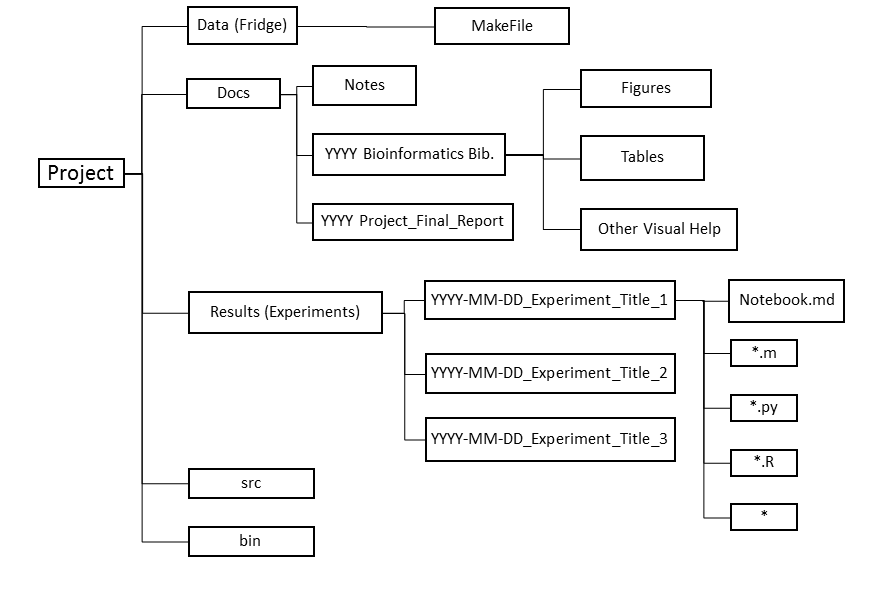

Title: Getting Started in Flaherty Lab
Subtitle: Handbook for New Members
Author: Yifan Zhao (2014), Tete Zhang (2014), Yuting He, Fan Zhang, Tim DeFreitas, Spencer Keilich, Hachem Saddiki, Patrick Flaherty
Affiliation: Worcester Polytechnic Institute
Date: May 28, 2014
Copyright:
Keywords:
Last update: May 14, 2014
Congratulations, and welcome! This guide is written by people who've been where you are and want to help you to have a productive and successful experience here.
You should first read through this document and configure your computer with necessary software. Understanding the contents in this document will help you establish a good habit on conducting reproducible experiments.
There are a few things you need to do to get started.
redwood.wpi.edu from Sia Najafi.flahertylab@wpi.edu. The webpage for him to do that can be found here.common repository using git into the Research folder in your home directory on redwood.wpi.edu.redwood.wpi.eduOnce you've set up your environment on redwood, then you'll need to start learning about the software, systems and culture for the lab. Read on...
redwood.wpi.eduredwood.wpi.edu is our primary linux server for computation. It's a 64 core machine with 256Gb RAM. In addition to onboard storage, we have a 9Tb high speed drive +1Tb solid-state drive attached to redwood via NFS for storing our data.
Ask Prof. Flaherty to add you to the flahertylab group through CCC. The webpage to do that is here.
Send the following email to Sia Najafi and cc Prof. Flaherty for an account on redwood. It is very important that Sia adds your account under the flahertylab unix group.
Your email should read as follows
Dear Mr. Najafi
I'm writing to request an account on Prof. Flaherty's compute server redwood.wpi.edu. Prof. Flaherty would like my default group to be flahertylab. We would like access to research.wpi.edu for a Mac and Windows machine as well.
I have already added myself to the flahertylab group through the CCC website.
If there is anything I can do to help, please let me know.
Thank you, Your name
Once you have your account name and password, change your password using yppasswd. (You need to finish Steps 3, 4, and 5 in a terminal application. Please see the next section for details.)
Check that you are in the flahertylab group using the command groups at the command prompt on redwood. If you don't see flahertylab as the first group, you need to speak with Prof. Flaherty to get that fixed.
Use ypchsh to change your default shell to /bin/bash.
A terminal application allows you to connect to our server, check the directories and files on it, and perform computations. Here are examples of commonly used terminal applications. After you installed them, and if you are not familiar with Linux commands, you can read the section about Linux commands.
Windows
X-win32 can be download from campus. Detailed instructions for installing and configuring X-Win32 can be found on the CCC website. Instructions for X-Win32 configuration can be found at http://www.wpi.edu/Academics/CCC/Help/Software/xwin.html. However, there are some minor changes in both installation procedures and configuration procedures.
For installation, most steps lists on ccc website stay the same, but the folder "X-Win32 9.2" doesn't exist. Instead of looking for this folder, directly double click on the shortcut "Install X-Win32 2012 (1178)".
This is how you configure it:
Mac:
Terminal is the Mac equivalence of X-win32. After opening up the Terminal application, type in command ssh yourusername@redwood.wpi.edu and hit enter key. Then enter your password under instruction. Now you should be able to access redwood successfully and you may change your password using command "yppasswd".
common RepositoryWe have a special repository called common that contains all of the files you need to set up your environment on redwood and get you started in the lab.
This procedure will create a Research folder and clone the common repository into it.
Just after you log in enter the following at the command prompt ($):
$ mkdir Research
$ cd Research
$ git clone ssh://redwood.wpi.edu/research/pjflaherty/flahertylab/git/common.git common
You will be asked to enter your password to log into redwood again. This is just so that you can pull the code. git will logout when done.
Type ls to list the directory. You should now see a folder called common. Navigate into that folder using cd common. Now with ls you should see several folder. One of which is gettingstarted. That folder contains this document.
Navigate to ~/Research/common/dotfiles and enter the following command at the command prompt $source link_dotfiles.sh.
This will place links to the environment setup dotfiles in your home directory. Next time you login you will have the default lab setup.
Start by updating your personal computer, so that your environment matches or plays nice with Flaherty Lab infrastructure. Here is a list of topics to be covered in this step:
The text editor is not only used for contributing to this document, but more importantly can be used for recording your lab work. It is also not a common sense text editor like Microsoft Word, but more like a website designer where your file can be output as files of multiple formats.
Windows:
Download MarkdownPad, NotePad++, or Sublime text.
If you use Markdown Pad, please read the documents in the Help menu carefully to get familiar witht the syntax. You can start with Open Welcome Document, and then read the Standard Markdown Syntax, and Markdown Extra Syntax. There is a cheat sheet to help you.
After reading the guides, you should be able to make words bold or italic, make headings, quotes and code blocks, and insert URLs or graphs.
Mac:
Download the program Textmate or Mou. The syntax is similar to that of Markdown.
Drive mapping is how Microsoft Windows and OS/2 associate a local drive letter (A through Z) with a shared storage area to another computer over a network.
Windows:
Computer->map network drive->Drive: select a drive that's not usually used, for example S: Folder: \\research.wpi.edu\flahertylab
Please enter your WPI usersname and password. Then, check the two checkboxes: Reconnect at logon and connect using different credentials.
Mac:
Finder -> Go -> Connect to Server -> smb://research.wpi.edu/flahertylab
Please enter your WPI username and password.
You should see a folder with your username. That is the same folder you enter when you log into redwood.wpi.edu. Anything you change in the windows drive will also change in the redwood.wpi.edu environment.
Connect to the printer in the lab.
Windows:
In order to connect your Windows machine to the printer, click on the start button, then on the search field type: \\printers.wpi.edu and hit enter. Then a window will pop up and ask for your WPI username and password. Remember to change the domain to "ADMIN" by typing ADMIN\username or username@wpi.edu in the username column.
A window with all the available printers will pop-up. Look for "p60_biomed3". Double click on it to connect. It will take a few minutes to set up. Before you are allowed to print, however, you must add a user ID in the print settings.
Go to the control panel and right click on the printer, then select "Printing Preferences". Go to job setup, and enter in the user ID, and click OK. It is also a good idea to go into the edit menu and enable 2-sided printing.
Mac:
Here is the guideline on how to add a printer on campus generally. The address of the printer is p60-biomed3.wpi.edu.
cd: Change Directory
cd ../: Go to the Directory One Level Above
cd ../../: Go to the Directory Two Levels Above
cd ./: Current Directory, Where the Command Prompt Is
echo: Display Text on Screen
exit: Exit the Shell
history: Shows Commands History
ls: Prints out Files Available in the Present Working Directory
ls -l: List in Long Format, Provides More Info about All Files
ls -a: Lists All Files Including the Hidden Ones
man "function/commandname": Help Manual
mkdir: Create New Directory
pwd: Print Working Directory
rm: Remove File(s)
who: Shows All Users Online
--help: Prints the Synopsis and a List of the Most Commonly Used Commands
We've collected some useful unix tips and tricks here. The following is retrieved from http://mmb.pcb.ub.es/~carlesfe/unix/tricks.txt.
Here is another recommended tutorial. You can skip the first part and start reading from Page 6.
Writing good bash scripts can be challenging. Use this guide to get the basics. And use this guide to make your code more robust.
We use a version control system git in the lab extensively. The system has a tree structure that bears all the work in the shared drive. Git allows many people to work on the same project at the same time, and avoids the confusion caused by keeping track of the updated versions of the same file. The following paragraph describes the steps for your to complete a job using Git.
At the beginning of your work, you should clone a copy of the repository to your local drive and this is your own branch of the central repository. You can edit the files under the copied repository. All work should be saved under the copy of the repository in the end. Here you may stage (add) your changes to save it on your own branch, commit your changes to make recorded changes to your own branch, and push your changes to make recorded changes to the main repository. Also, you would be able to fetch from the main repository to see what others have done to the same experiment and pull the changes if you feel like merging others' work with yours. All the changes made to the main repository is recorded so that the activities at any time spot can always be undone.
If there's any collision where you and your teammate have done the same changes to the repository, only the first one who pushes would be able to push and the second push would be denied. Whenever this happens, the second person should first pull from the first person and push again to make other changes. To keep the collision to a minimum, you and your teammate should keep the communication open and distribute the work properly to make sure that you are working accordingly and efficiently on the project.
The GIT Graphic User Interface (GUI) is very useful and easy to start with software for version control purposes in the lab. The detailed instructions of the commands will be introduced in later parts of this document.
Windows:
You can either download Git for Windows or SourceTree for Windows.
The configuration steps below are for SourceTree. After downloading it, install all as default.
Click Clone/New -> clone repository ->Source: ssh://username@redwood.wpi.edu/home/pjflaherty/flahertylab/git/common.git
You need to enter your password for this.
Target: should be somewhere safe.
Clone Type: Standard.
Mac:
Run Source Tree -> Clone Repository ->
Source Path:ssh://username@redwood.wpi.edu/home/pjflaherty/flahertylab/git/common.git
Destination Path: should be somewhere safe.
You need to enter your redwood password for this.
Linux:
However most of the work in the lab is done over command line in linux. A good intro is available here. And here is a good cheat sheet for Git commands.
git status: Show the working tree status.
git clone: Clone the existing project.
git pull: Fetch from and merge with another repository or a local branch.
git add: Add file contents to the index.
git commit: Record changes to the repository. You can use git commit -m and a quoted sentence to discribe what you have done.
git push: Update remote refs along with associated objects. Only pushed files can be seen by others. Committed files won't be seen by others.
$ git ls-remote shows all of the branches that are available remotes regardless of whether you're tracking them locally or not.$ git branch shows all of the local branches$ git branch -r shows all of the remote branches being trackedOften we want to switch to a different branch that's available on the server.
$ git remote Shows the names of the remote server nicknames that you can pull from. Call this <repository>.
$ git ls-remote <repository> Shows the branches that are available on that repository that you can pull from. It's best to pull a branch that is also a head. You can isolate those using $ git ls-remote --heads <repository>.
git pull <repository> <branch> Pulls a current branch from the repository. Make sure you don't have any uncommitted changes; if so use the stash.
Set up a new remote repository that a group can read/write on the server Reference
You must have write permissions to the directory you want to put the repository in.
First cd to flahertylab/git or wherever you want to put the repository to create project.git remote repository. The common group is flahertylab.
$ newgrp flahertylab
$ mkdir -p project.git
$ cd project.git
$ git init --bare --shared=group
$ sudo chgrp -R flahertylab .
Then set up a hook to change the file permissions in Create the following file: project.git/hooks/post-update
#!/bin/sh
chmod -R g+rwX . 2>/dev/null
chgrp -R flahertylab . 2>/dev/null
$ git init within the local directory to put it under control$ git remote add shortname path_to_remote where shortname is research or origin or whatever you want to call it. And path_to_remote is a full path to the remote repo.$ git push origin master where origin is the shortname for the remote repo and master is the branch you are on.Sometimes a user will be denied access to a shared repository on redwood. When cloning the repository, include your username in the ssh link as shown below:
$ git clone ssh://yourusername@redwood.wpi.edu/research/pjflaherty/flahertylab/git/gettingstarted.git gettingstarted
The difference between clone and pull.
Clone: copy the directory to your local drive/create your own branch (only do once for each project).
Pull: copy the changes to the repository to your local drive (done multiple times when developing the project, manually controlled by the project manager).
Great git Manual Page: http://www.kernel.org/pub/software/scm/git/docs/
The lab is multi-disciplinary and we all have some background in genetics, computer science and statistics. Everyone has one area they're best at, one they're mediocre at and one they just survive. To be successful, find people in the lab who complement your weakness while you work to get better at all three.
The three most important concepts in software engineering are: DRY, test, and document. DRY stands for "don't repeat yourself". If you find yourself cutting and pasting code, figure out a way to make it a reusable function. Testing is critical to all good software development and often is ignored because it's hard to do. As a corollary, if you're good at developing boundary and unit tests, it's very easy to find a high paying job. Try to write the tests before the code or at least think of what tests you need before you write the code. Lastly, documentation is the key to good research and software. Comment your code. More importantly, keep a paper or electronic lab notebook. For each experiment, write down (1) the purpose of the experiment, (2) what you expect to happen as a result and (3) what you actually observed. This becomes the raw material for presentations, papers and patents. If you don't document it, it never happened.
After following this step, you are expected to be familiar with the following topics:
Please follow this procedure when downloading big or important data sets.
To create a checksum,
$ md5sum urfile1.txt urfile2.txt urfile3.txt > md5.sum
To see the result of the checksum,
$ cat md5.sum
595f44fec1e92a71d3e9e77456ba80d1 urfile1.txt
71f920fa275127a7b60fa4d4d41432a3 urfile2.txt
43c191bf6d6c3f263a8cd0efd4a058ab urfile3.txt
To check the checksum value of all files,
$ md5sum -c md5.sum
urfile1.txt: OK
urfile2.txt: OK
urfile3.txt: OK
To check the checksum value of one file,
$ echo "595f44fec1e92a71d3e9e77456ba80d1 urfile1.txt" | md5 -c -
urfile1.txt: OK
The algorithm would create a .bam file to keep the checksum value. A tutorial for creating and verifying checksums is here.
The MD5 algorithm has some vulnerabilities that you can read about on wikipedia. The current standard seems to be SHA2. However, MD5 is implemented on most systems including mac and linux and seems to be good enough for non-critical work.
In the Flaherty Lab we have three levels of data, freezer data, fridge data and bench data.
In a common wet lab, the bench data is the immediate data you collected on the bench, which is temporary but reflects the current status of your study objects. The fridge data are collected from study objects preserved in a fridge, which lasts longer than the bench data, and should be able to tell a longer story about the study objects. The freezer data is collect in an extremely cold environment where the study objects last the longest.
In a bioinformatics lab these three levels of data meant differently but kept the same concept.
The freezer folder, located one level above your personal directory, keeps the primary data you collected or downloaded. They should be kept in the folder once added. Since a little amount of data lost or corruption might influence the future analysis, we need to do the checksum algorithm mentioned above every time new data is added to the folder.
The fridge contains the secondary data, which you have modified for the purpose of your project. It is not the primary data but can be considered primary for your project. To reproduce your data for the project, the algorithm you used to create the fridge data should be contained in the fridge. The detailed information of what to put in the fridge will be elaborated in the project storage structure section.
The bench data should be the result you get after running the data in the program you wrote. However here in the repository we only record the code you wrote to run the fridge data and the collective result you get (figures, tables, etc) since the data itself would be too big to store. However with the code that is stored here, your data result would be reproducible.
In the lab we have a standard way of organizing the experiment notes, data and resources so that your work is clear to everyone in the lab and helpful when compositing a research paper.
First of all, you need to go inside your personal folder named with your WPI usename. Inside of that folder, create another new folder named "Research". Inside of the "Research" folder, you can create folders for all the different projects of yours.
For each project, there are several folders you need to keep various forms of data. An example of this can be found here.

The fridge keeps the secondary data, which is the modified primary data specific to your project. It can be normalized, statistically analyzed, or In order to make each branch of yours smaller, we are not keeping Gigabytes of modified data in the fridge. Instead you should create a Makefile which contains the code you wrote to analyze the primary data so that the program can always run by others, and the branch is smaller in the mean time.
Notes on Makefile
Makefile is a file describing the relationship (most of the times computational) among data files and providing commands for developing and updating data files. It is derived from the C recompiler yet has nothing to do with the source code in this lab.
Makefile is a series of commandline code and the general format of a Makefile command is:
target:dependent(s)
[tab]rules
Target is the output file you want as a result, dependent(s) are the files you need to create the target, and the rules include the relationship and the transformative commands between the target and the dependent. According to the rule of reproducible programming, the commands should be pre-written executable code.
For instance, in your experiment you would like to create a depthchart file with a pileup file. The pileup file is created from the bai file, and the bai file is generated from the bam file stored in the freezer. Your Makefile command would look like this:
yourfile.dc : yourfile.pileup
pileup2dc yourfile.pileup > yourfile.dc
yourfile.pileup : yourfile.bam
samtools ipileup yourfile.bam -o yourfile.pileup
yourfile.bam : yourfile.sam
samtools view -b -S -o yourfile.bam
pileup2dc, samtools mpileup and samtools view are pre-written executable functions.
The order of the command matters since the first file name it encounters, i.e. yourfile.dc in the example above, is treated as the final output file of the command. However if you have a complcated mapping of file type transformation, you can write
all : yourfile.dc
in the beginning or
clean :
rm yourfile.dc yourfile.pileup yourfile.bam
at the end of your commad so that the all file or the file that is not cleaned is recognized as the final output file type.
The Docs folder keeps the documents needed to construct the final paper. The first subfolder is "Notes", where you keep all the experiment notes that is useful to your final paper. The rest subfolders keeps all the tables, figures and other visual aids you plan to use. They should be separated by papers/reports since various journals may ask the scholar to arrange their tables and figures differently and separating them would be the easiest when the time comes to composite the final research paper.
The results folder is the most detailed and important one of all folders (although every one of them is quintessential). All the subfolders in the "Results" folder are experiments you did for this project. They should be named precisely as YYYY-MM-DD_Project Name so that the computer may sort the experiments according to their start date. Inside of each experiment folder, you should keep a notebook, which is a markdown file containing the purpose, the materials and methods, the results and the conclusion of the experiment. The markdown file should be written using your text editor installed above and it will be the primary source of your research paper. Also, all the Matlab, python, R and any other assisting code files should be saved alongside the notes as well.
The source folder contains all the combined code you write for the experiment. Inside of the result might be pieces of small functions you write to run one specific step of the experiment, while in the source folder you should keep versions of the complete program.
The bin folder contains all the executable files. They might be programs you find online that are helpful to the experiment, or they are compiled programs that you can execute with one command when programming. The folder is important for reproducible programming.
You will often be reading and writing data and results files. In order to standardize the interface between apps that we write we use some standard file formats for data management.
Use HDF5 or CSV formats for data and models. MATLAB *.mat files are HDF5 format. Python has libraries (pytables, h5py) to read/write HDF5.
Use Markdown for documentation and notebook files.
Use eps for figures
Use docx or tex for manuscripts.
We use functional programming for the majority of projects in the lab and we use object-oriented programming only where it really makes sense.
Pure functions have meet two criteria:
Most of your code will fall into the pure function category and you can keep things orderly by following a few guidelines for the exceptions.
We primarily use MATLAB, Python and C. Occasionally, you'll need to use another language such as bash shell, but only for very simple tasks that you could probably also do with one of those three. Knowing MATLAB will help you in most engineering jobs and academia. Google considers Python and C two of their core languages.
Some tutorials to learn MATLAB are available here. Don't buy any books or pay for anything. There are plenty of free resources to learn matlab out there.
Go through the Software Carpentry lectures on version control, the shell, python, testing and MATLAB.
Learn about testing using the nose framework. Learn about sharing results using ipython notebooks. Learn about virtual environments
A good book to get started in data analysis with python is "Python for Data Analysis" by O'Reilly. You can read it through Safari Ebook at the Gordon Library.
These are core modules and should always be available.
[nose]
[distribute]
Gurobi is an optimizer we use in the lab for mathematical programming. It is compatible with multiple programming interface including python.
When installing gurobipy for python on MacOSX 10.8 you need to make the following changes.
https://groups.google.com/forum/#!msg/gurobi/ArCkf4a40uU/R9U1XFuMJEkJ
When trying to use Gurobi with Enthought's latest Canopy (formerly EPD), you'll probably get something like
$ ipython
In [1]: import gurobipy
Fatal Python error: PyThreadState_Get: no current thread
Abort trap: 6
or some Library not found error.
Here's what you need to do to get this fixed on Mac OS 10.8 (with Xcode installed):
$ python setup.py install (skip this line if you already installed Gurobi in Canopy's site-packages)
In your ~/.profile, append the following after Canopy's call to source the activation file:
export DYLD_LIBRARY_PATH=/Library/gurobi550/mac64/lib:$DYLD_LIBRARY_PATH
export DYLD_FRAMEWORK_PATH=/Library/gurobi550/mac64/lib:$DYLD_FRAMEWORK_PATH
Fix the shared library (change USERNAME to your user name!)
$ install_name_tool -change /System/Library/Frameworks/Python.framework/Versions/2.7/Python /Users/USERNAME/Library/Enthought/Canopy_64bit/User/Python /Users/USERNAME/Library/Enthought/Canopy_64bit/User/lib/python2.7/site-packages/gurobipy/gurobipy.so
Step 3 needs to be repeated every time Gurobi is updated to a new version (until the issue is fixed of course).
You might have large amount of calculations to be done for your experiment. If the calculation requires 64 core server, the redwood server can handle it. However if it requires more, the processing time would be a lot longer if the work is done on redwood. Here we distribute the work to Amazon, which provides an amazing service "Amazon Machine Image" to do the calculation for us. The CrossCompute Amazon Machine Image has an iPython(interactive parallel computing in Python) notebook server with: numpy, scipy, h5py, pytables, matplotlib, pyramid, scikit-learn, pandas, statsmodels, networkx, theano, gdal, pysal, shapely. You need to launch a High-CPU Medium Instance to use it. The on-demand price is $0.145 per worker per hour and the spot instance price is $0.018 per worker per hour. The user's guide can be found here.
Although we usually use the iPython notebook to distribute our work, there are other toolkit to simplify the process of building, configuring, and managing clusters of virtual machines on Amazon’s Elastic Compute Cloud. It is designed by MIT and can be found here as an open source cluster-computing toolkit.
MPI is a language-indeendent communications protocol used to program parallel computers. Both point-to-point and collective communication are supported. The MPI Python implementations include: pyMPI, mpi4py, pypar, MYMPI, and the MPI submodule in Scientific Python. Here you may find some tutorials and exercises to MPI.
There are a few good background books on research, bioinformatics and machine learning that will help you become a productive member of the lab. These are organized more by topic and rating. (xxx) = essential (xx) = recommended (x) = useful
We primarily use MATLAB, Python and C. Occasionally, you'll need to use another language such as bash shell, but only for very simple tasks that you could probably also do with one of those three. Knowing MATLAB will help you in most engineering jobs and academia. Google considers Python and C two of their core languages.
Some tutorials to learn MATLAB are available here. Don't buy any books or pay for anything. There are plenty of free resources to learn matlab out there.
Go through the Software Carpentry lectures on version control, the shell, python, testing and MATLAB.
To Be Developed
https://www.coursera.org/course/matrix
The Practice of Programming by Kernighan and Pike(xxx)
Try out a few sample bioinformatics problems to build your programming skills and thinking about bioinformatics problems. * Rosalind
There are two plants in the lab. Everyone in the lab is responsible of taking care of them, including regular watering and sunbathing. :)
You'll be asked question throughout your exam. A good way to answer a question you don't immediately know the answer to is: "We’ll see. We'll do X experiment. We have to look at the data and see if X is . If so, we’ll do , if not, we’ll do _______."
Should be 2min maximum. Sets up ethos; speaker will handle pathos and logos. Don't say: "As everyone knows." - they don't.
1) Say Speaker's Name (ask for phonetic pronunciation)
2) Current affiliation of Speaker - Professor of Mathematics, University of X - Junior partner at company X - Director of Center of X
3) Experience and achievements - Academic degree if appropriate - Current and/or previous positions, possibly with dates - publications (highlights) - awards & prizes
4) Concerning today's talk - Expert who has worked in the field/project for X months/years - Will present his/her/group's research on the subject - Will summarize project report or current project status.
[1] Some of the ideas and structure for this document are from the Valve: Handbook for New Employees.
We can also create our own virtual machine loaded with enthought and other stack options. Anyone want to take the initiative on this?
TODO: reorganize the freezer as described in the gettingstarted file
Things to do for the Getting Started File:
recommended reading?$$
What do we do with common code?